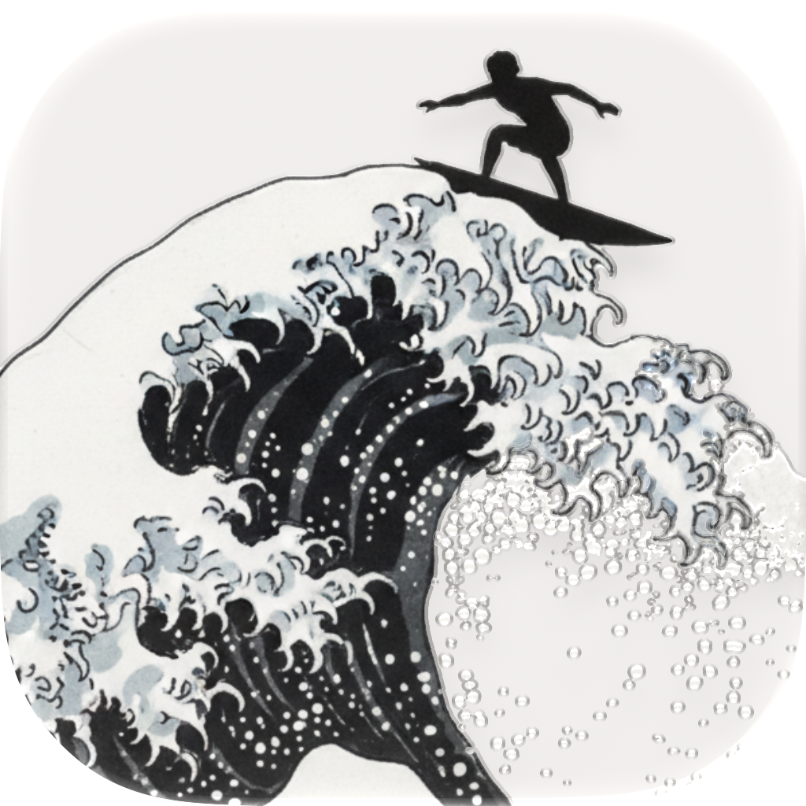

The zone split stays: breath on top, your anchor in the middle, the people who pick up at the bottom. What changes is everything that was fighting the moment — the navy void, the cyan, the blurred glow crawling around the edge of a screen you're staring at while white-knuckling it.
Light is warm paper. Dark is the same room with the lights off — warm ink, not blue-black — so switching at 3am doesn't feel like switching apps. The glow becomes a solid tinted band at the screen edge, one flat colour per phase, no bloom. And the beat counter now sits in a wave trough that fills as you breathe in and drains as you let go, so the pattern is visible before you've read a word.
Every screen below is live and running the real box-breathing timing. Left column light, right column dark.
Headline face — three ways off the beach
Pick one and the whole document below re-renders in it. Body copy stays Figtree in all three.
The mark
Parked for now — the Hokusai icon stays as it is, and it is what the Welcome screen below uses. Keeping the sketch here so it is easy to pick back up.
3aOne step ahead of the break — parked
In use

PATTERN
Welcome
The new mark and the wordmark, at the one moment the app is allowed to introduce itself.
{{ t.name }}
Ride It Out
You don't have to fight the wave. You just have to stay on it.
I need help right now
Set up my ride
Breathe. Ground yourself. Call someone.
No account. Nothing ever leaves this phone.
Home
The trough fills through the inhale, holds, then drains through the exhale. The edge band is one flat colour per phase — no blur, no pulse to chase.
{{ t.name }}
{{ beat }}
{{ phaseLabel }}
{{ methodLabel }}
{{ methodHint }}
You have done this before. It ends.
Take the tour
{{ l.initials }}
{{ l.name }}
+
Add someone
+
Make it mine
Guided tour
Same three-stop spotlight. On light the scrim is a warm dim rather than black, so the page underneath still reads as paper.
{{ t.name }}
Your lifelines
Four people who will pick up. Put them here once and you can reach them in two taps, without thinking, on the worst night.
Got it
Skip
Settings
Appearance sits at the top: System by default, with a manual override. Rows keep the 16px rhythm but drop the all-cyan treatment — icons carry the accent, labels stay ink, so the destructive row is the only coloured label on the screen.
{{ t.name }}
Settings
APPEARANCE
System
Light
Dark
CUSTOMIZE
Customize Breathing
Grounding Media
Customize Lifelines
REMINDERS
Reminders
HELP
Guided Tour
Send Feedback
Feedback is always welcome
Join our Discord
Community, support and updates
DATA
Privacy and data
Erase everything
Free, complete and private. Always.
Leave a tip
Breathing patterns
The beat chips now read as a timeline of the pattern rather than four loose pills — width tracks duration, so 4-7-8 looks like 4-7-8 at a glance.
{{ t.name }}
Breathing
{{ m.label }}
{{ m.description }}
{{ b.n }}
Haptics
A soft pulse on every beat, so you can follow the pattern with the phone in your pocket or face-down.
Grounding anchor
The placement box previews at the real 390:422 zone ratio, and the photo is washed the way the system treats every image.
{{ t.name }}
Your anchor
One thing that pulls you back. A face, a place, or a sentence you need to hear.
Photo
Video
Words
None
Pinch to scale, drag to move. This is exactly how it will sit on your home screen.
Reset placement
Change
Lifelines
Reordering is tap-and-drag on the grip, not arrows — try it, both columns move together. Call and text are filled 44px circles rather than bare glyphs, because this is the row you use when your hands are shaking.
{{ t.name }}
Lifelines
Up to four. The top one shows first at home.
{{ l.initials }}
{{ l.name }}
{{ l.phone }}
+ Add a lifeline
Press and hold a row, then drag it into the order you'd actually reach for. Tap a name to edit, or call and text straight from here.
Reminders
Times become large tappable pills instead of iOS list rows — the same control, sized for the rest of the app.
{{ t.name }}
Reminders
Daily check-ins
A gentle nudge to breathe before you need to. You choose when, and how often — up to three a day.
TIMES
{{ r.time }}
{{ r.note }}
+ Add a time
Watch
On a 44mm face the trough becomes the whole screen: the fill is the breath, the number is secondary. Edge band stays.
{{ t.name }}
{{ beat }}
{{ phaseLabel }}
{{ methodLabel }}
MR
Maya R.
Call
Open questions for you: the destructive red (#9c3b28) is the one colour not already in the system — say the word and I'll pull it back to a deep terracotta. You also mentioned the app icon colours are open; if you want, I can propose a cream-ground version of the icon so it sits in the same family as the light scheme.